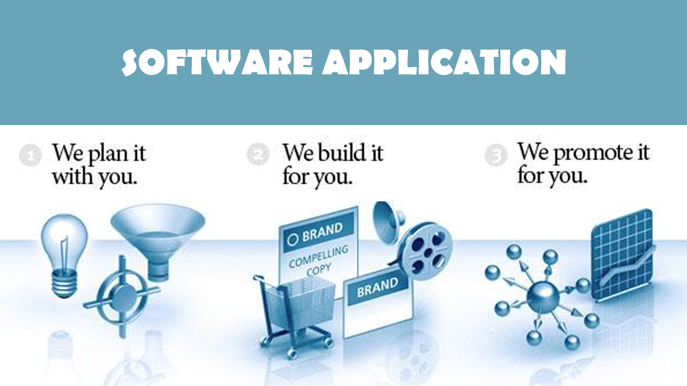
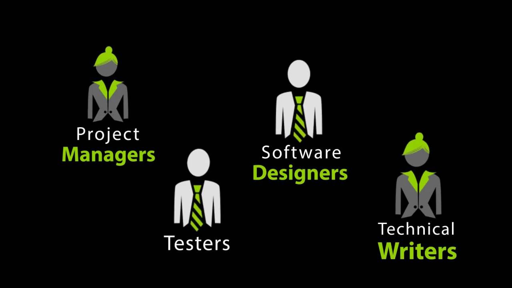
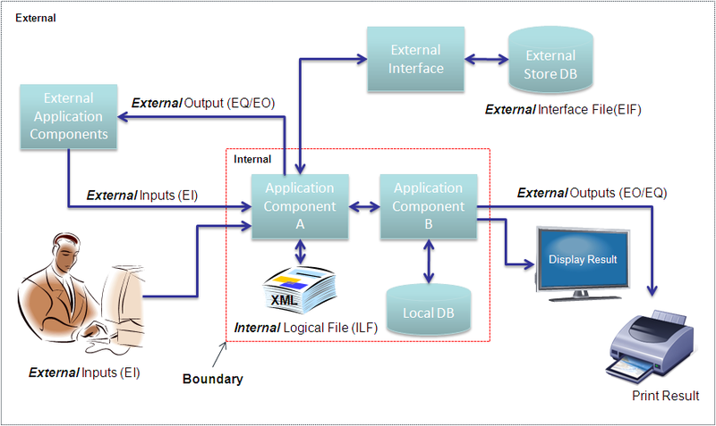
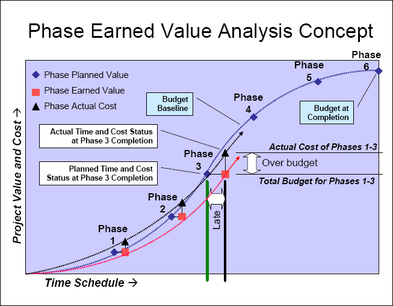
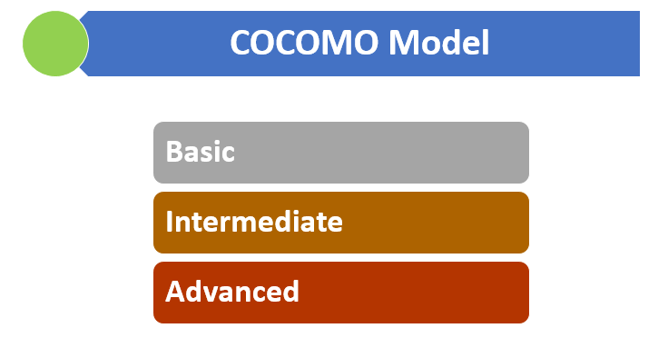

SELECT TYPE OF ESTIMATION

FUNCTION POINT ANALYSIS |
A function point is a "unit of measurement" to express the amount of business functionality an information system provides to a user. Function points are used to compute a functional size measurement of software.
The cost of a single unit is calculated from past projects. |

EARNED VALUE ANALYSIS |
| Earned value management, earned value project management, or earned value performance management is a project management technique for measuring project performance and progress in an objective manner. |

COCOMO |
| The Constructive Cost Model is a procedural software cost estimation model developed by Barry W. Boehm. The model parameters are derived from fitting a regression formula using data from historical projects. |